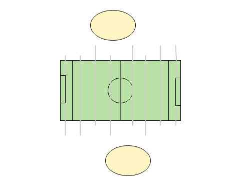
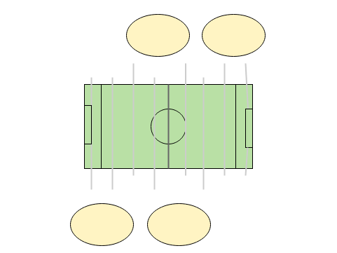

Kickchain
A blockchain based Kicker-Application on Kubernetes
Created by Sascha Koch
Kicker / Foosball (A.E.)
Kicker / Foosball (A.E.)
Kicker / Foosball (A.E.)
Kickchain
http://localhost:8080/Blockchain
"The consequences of this breakthrough are hard to overstate."
-- Marc Andreessen
"Distributed ledger technologies offer institutions a once-in-a-generation opportunity to transform the industry to their benefit, or not."
-- PWC report
"What the internet did for communications I think blockchain will do for trusted transactions."
-- Ginni Rometty
"There's some really good technology in terms of sharing databases and verifying transactions that is talked about as blockchain, that is a good thing."
-- Bill Gates
"There is technology becoming available (...) I don't claim to be an expert on it but the most obvious technology is blockchain."
-- Phillip Hammond
Blockchain
A blockchain is a growing list of records, called blocks, which are linked using cryptography.
-- wikipedia.org
A game
{
"team1": { "players": [ "Alice", "Bob" ] },
"team2": { "players": [ "Eve", "Mallory" ] },
"score": { "goals1": 10, "goals2": 4 },
"signature": "a77d1cf2371b489facbf053e01955caec8a9e7379b202f6d38f782a01bf54868"
}
A block
{
"header": {
"index": 1,
"timestamp": "2018-10-07T17:32:14.867Z",
"transactionHash": "d7fabd9dcc8ef2d00699ede532d157bb242f5b0031981d97082aee64536d4c80",
"previousHash": "b256190643cb1598c41069d6d0704e235d027e5582daf71c9d1a046e71301e90",
"proof": 40663
},
"content": [ ... list of games ... ]
}
A chain of blocks
{
"name": "Kickchain",
"chain": [
{
"header": {
"index": 0,
"timestamp": null,
"transactionHash": "74234e98afe7498fb5daf1f36ac2d78acc339464f950703b8c019892f982b90b",
"previousHash": null,
"proof": 100
},
"content": []
},
{
"header": {
"index": 1,
"timestamp": "2018-10-07T17:32:14.867Z",
"transactionHash": "d7fabd9dcc8ef2d00699ede532d157bb242f5b0031981d97082aee64536d4c80",
"previousHash": "b256190643cb1598c41069d6d0704e235d027e5582daf71c9d1a046e71301e90",
"proof": 40663
},
"content": [
{
"team1": { "players": [ "Alice", "Bob" ] },
"team2": { "players": [ "Eve", "Mallory" ] },
"score": { "goals1": 1, "goals2": 10 },
"signature": null
}
]
},
{
"header": {
"index": 2,
"timestamp": "2018-10-07T17:44:04.801Z",
"transactionHash": "8041052671ec8d67ebbe5b1c50661a384166d8ec76fa980c9d26d0266cbf5d2b",
"previousHash": "0f1f7a34842b89e39e4458f6c29cf736e4be98b789533c287d7fb4486216f3e7",
"proof": 121820
},
"content": [
{
"team1": { "players": [ "Dennis", "Darius" ] },
"team2": { "players": [ "Tobias", "Ruben" ] },
"score": { "goals1": 0, "goals2": 10 },
"signature": null
}
]
}
]
} A chain of blocks
Chain available as json object
Architecture
Storage
- JPA (e.g. H2 in-memory database)
- Neo4J
Neo4J
$ docker run \
--publish=7474:7474 --publish=7687:7687 \
--volume=$HOME/neo4j/data:/data \
--volume=$HOME/neo4j/logs:/logs \
neo4j:3.4
Cloud
Why
Value of distributed ledger comes from distribution
Quick and easy
CloudLab, you know?
Docker
Widely used
Prerequisite for Kubernetes (at time of writing)
Live Demo
Dockerize Application
Live Demo
Synchronization of two nodes

Production-Grade Container Orchestration
Minikube
Minikube can be installed locally Runs a single-node Kubernetes cluster inside a VM
$ minikube start
$ kubectl cluster-info
$ minikube dashboard
Kubernetes Overview
- Create a deployment
- Create a service
- Create an ingress
Create a deployment
apiVersion: apps/v1
kind: Deployment
metadata:
name: kickchain-deployment
spec:
replicas: 2
selector:
matchLabels:
app: kickchain-demo
template:
metadata:
labels:
app: kickchain-demo
spec:
containers:
- name: kickchain-demo
image: skonair/kickchain-demo:latest
ports:
- containerPort: 8080
command: ["java"]
args:
- -Djava.security.egd=file:/dev/./urandom
- -jar
- /kickchain.jar
- --database.type=jpa
Create a service
apiVersion: v1
kind: Service
metadata:
name: kickchain-service
spec:
ports:
- port: 8080
protocol: TCP
name: http
selector:
app: kickchain-demo
type: NodePort
Create an ingress
apiVersion: extensions/v1beta1
kind: Ingress
metadata:
name: kickchain-ingress
annotations:
nginx.ingress.kubernetes.io/rewrite-target: /
spec:
backend:
serviceName: default-http-backend
servicePort: 80
rules:
- host: localhost
- http:
paths:
- path: /kickchain
backend:
serviceName: kickchain-service
servicePort: 8080
Life demo
Stateful vs stateless services
Specific challenges for database
Not (necessarily) required here
Pitfalls
Bandwidth intense deployments
Technology stack can be confusing
Money(!)
Database (Neo4j)
When does Cloud/K8s makes sense?
Join us